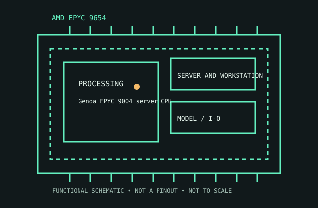

[ SERVER AND WORKSTATION PROCESSORS // IDENTIFIED CPU ]
AMD EPYC 9654
Genoa EPYC 9004 server CPU, 2022. 96 cores/192 threads; 2.4/3.7 GHz base/max; 384 MB L3; 360 W; SP5; 12-channel DDR5-4800; 1P/2P.

MODEL IDENTIFICATION: AMD EPYC 9654. Match full model suffix, stepping and package to the physical item and cited documentation.
Recorded specifications
| Cataloged model | AMD EPYC 9654 |
|---|---|
| Era / family | Genoa EPYC 9004 server CPU, 2022. |
| Model specifications | 96 cores/192 threads; 2.4/3.7 GHz base/max; 384 MB L3; 360 W; SP5; 12-channel DDR5-4800; 1P/2P. |
| Compatibility | SP5 board/BIOS, 360 W cooling and registered DIMMs. |
| Variants / limits | 9654P is single-socket-only distinct SKU. |
Compatibility and variants
- SP5 board/BIOS, 360 W cooling and registered DIMMs.
- 9654P is single-socket-only distinct SKU.
- Check system-vendor CPU support, board revision, firmware minimum, package, memory, cooling and power before installation; similar socket naming does not prove compatibility.
Service and archival notes
Record OPN, firmware, carrier, DIMM channels and cooling.
Archive the complete marking/OPN/sSpec, stepping, physical condition, tested host revision, firmware, memory population, cooling, and test conditions. Distinguish published limits from measurements.
Sources & further reading
- Model identification/specification search — AMD EPYC 9654Model-level part identification and specification cross-reference.
- AMD technical archive — AMD EPYC 9654 product familyAMD-authored processor data books and family specifications.
- AMD product-history reference — AMD EPYC 9654Manufacturer history reference for product-family context.
Use the matching manufacturer data sheet revision and platform vendor’s CPU list for final fit decisions.